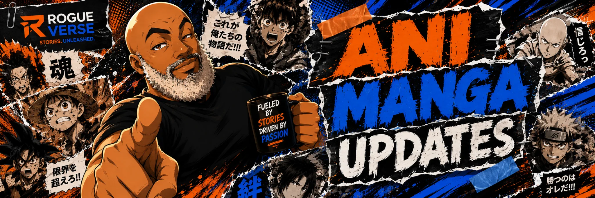

Old Man Otaku presents
ANIMANGA UPDATES
Anime, manga, webtoons and light novels, with news, reviews, recommendations, history and the occasional reminder that sleep is technically part of the viewing experience.
Latest from AniManga Updates
WHAT'S MOVING NOW
Breaking announcements sit beside deeper features, reviews and recommendations. Every story gets a visual identity, a clear category, and a permanent home inside RogueVerse.
Naruto Is Teasing a Major October 10 Reveal, But Nobody Knows What It Is Yet
VIZ is counting down to NYCC with Naruto and Sasuke's Japanese voice actors attending, but the project itself remains officially unidentified.
ANIME PRODUCTION • AUGUST 20, 2026Sakamoto Days Season 2 Has a New Director, and That May Matter More Than the Teaser
Daisuke Nakajima takes over as director while Masaki Watanabe moves to chief director ahead of the January 2027 return.
ANIME NEWS • AUGUST 19, 2026Haikyu!! Reveals New VS The Little Giant Visual and Where the Monsters Go Action PV
Hinata vs. Hoshiumi takes shape for the 2027 film while Bokuto vs. Kiryu explodes into finished animation footage for the companion TV special.
ANIME NEWS • AUGUST 19, 2026Overgeared Locks In October 2 Premiere
The second full trailer confirms the date, six additional cast members and both theme songs as another major Korean webtoon makes the jump to anime.
ANIME FILM • AUGUST 19, 2026Mononoke's Movie Trilogy Reaches Its Finale on Netflix September 29
The Curse of the Serpent brings the Ōoku trilogy to global streaming and gives international viewers one home for all three films.
MANGA NEWS • AUGUST 18, 2026Kenichi 2 Hits Its First Major Print Milestone
The official sequel reaches bookstores with Volume 1, a new trailer, a 17-million-copy franchise milestone and collector editions of the original manga.
ROMANCE ANIME • AUGUST 17, 2026Tired of High-School Romance Anime? Try Smoking Behind the Supermarket with You
A 45-year-old office worker, after-hours conversation and a genuine slow burn earn one of 2026's strongest adult romances a 9.2 RogueVerse early score.
MANGA INDUSTRY • AUGUST 17, 2026HarperCollins Is Launching Kazé in the U.S.
Seven mystery licenses are only the beginning. HarperCollins is giving manga a dedicated U.S. imprint backed by global publishing infrastructure.
ANIME NEWS • AUGUST 16, 2026Reincarnated as a Sword Season 2 Unleashes the Sky Island Arc
Fran and Teacher return with a new trailer, a new Lich, both theme songs and the corrected release schedule.
NARUTO & BORUTO • AUGUST 14, 2026Boruto Didn't Confirm the Senju Are Extinct. Their Disappearance Is Stranger.
Konoha's founding clan has almost vanished from the modern story, but canon has never declared every Senju descendant dead.
ANIMANGA NEWS • AUGUST 13, 2026Solo Leveling: Ragnarok Returns August 12, But There’s a Catch
The English light novel is back on Tapas. The manhwa Season 3 still has no confirmed date, and this is not an anime Season 3 announcement.
ROMANCE ANIME • AUGUST 12, 202610 Under-the-Radar Romance Anime You Should Be Watching
From adult workplace romance to quiet first love, ten excellent series hiding just outside anime's biggest romance spotlight.
ANIME INDUSTRY • AUGUST 12, 2026HIDIVE Just Made Its Biggest Anime Deal Yet
The expanded MBS partnership could give HIDIVE the deeper seasonal pipeline it needs to become a harder subscription for anime fans to skip.
ANIMANGA NEWS • AUGUST 11, 2026Anime Fan Arrested After $27 Million in Canceled Merch Orders
238 accounts. More than 2,100 cancellations. And one crucial correction: $27 million was the order value, not Shueisha's direct loss.
ANIME NEWS • AUGUST 11, 2026Mushoku Tensei Enters the Chaos Breaker Arc
Episode 8 opens a new chapter with a floating fortress, three cast additions and a much wider world.
ANIME NEWS • AUGUST 10, 2026Red Riding Hood Becomes a Detective in a New 2027 TV Anime
A familiar fairy tale is becoming a fantasy mystery, with Little Red Riding Hood investigating crimes across storybook worlds.
MANGA HISTORY • AUGUST 9, 2026The God of Manga: How Osamu Tezuka Changed Manga Forever
He did not invent manga. He helped expand what postwar story manga could become, then pushed television anime into a new era.
ANIME FEATURE • AUGUST 8, 2026Where the Hell Is the Boruto Anime?
Part Two is confirmed, the date isn't. Three years later, Two Blue Vortex may have finally given the anime the runway it needs.
ANIME NEWS • AUGUST 8, 2026Anime’s Next Wave Is Taking Shape
Made in Abyss returns, Madoka goes IMAX, two new premieres hit the calendar, and DIGIMON BEATBREAK enters its final chapter.
MANGA FEATURE • VERIFIED REBUILD10 of the Most-Liked Newer Manga of 2026
Rebuilt from real Manga Taisho and Next Manga Award evidence: 10 documented standouts, no invented titles or fake rankings.
ANIME INDUSTRY • DEEP DIVEDemon Slayer: Infinity Castle Didn’t Stop at $793 Million
The highest-grossing anime film ever has begun its second life on Crunchyroll. Here’s what the release says about anime’s new blockbuster economy.
ANIME & AENI FEATURETomb Raider King Is More Than a Solo Leveling Replacement
Why regression, relic hunting and a ruthless New Game+ protagonist make Crunchyroll's new Korean fantasy its own beast.
ANIME REVIEW • LIVE RATINGBLACK TORCH Is Finally Popular. But Did Anime Arrive Too Late?
A Summer 2026 popularity audit, in-depth critique, and RogueVerse four-perspective rating through Episode 5.
ANIME OPINIONMushoku Tensei Is 2026's Most Problematic Anime Hit
Season 3 is thriving, but neither strong craft nor claims of review bombing settle the moral argument around Rudeus.
ANIME PRODUCTIONKonoSuba Changes Studios Again
ENGI is new, but the creative team responsible for KonoSuba's chaotic identity is largely staying.
ANIME INDUSTRYWestbrook's Anime Pipeline
Will Smith's company is helping build a global anime pipeline, but its first production is still a mystery.
MANGA NEWSHorikoshi Returns With Horror
Don't Laugh, Shijima-san brings the My Hero Academia creator back to Shonen Jump.
ANIME UPDATEGundam RG XARX-ZERO
A new timeline, a strange Object and humanity’s next crisis.
COMIC HISTORYLuke Cage Went to Latveria
The legendary trip to collect a $200 debt.
GEEK LOREWho Is Worthy?
Breaking down what it takes to lift Mjolnir.